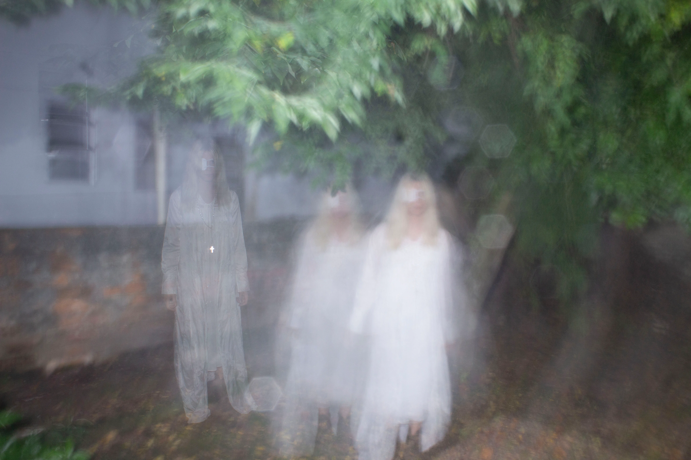

pesquisa, imagens que perduram, hiperstição, gravura e arte-sonora. entre a visualidade e o som, presenças espectrais e narrativas que se auto-realizam; escuta expandida;
a imagem e a repetição; inscrição no mundo; violenta e mística. inumanismo. prática coletiva e situada; pedagogias da criação e modos de compartilhamento de conhecimento.